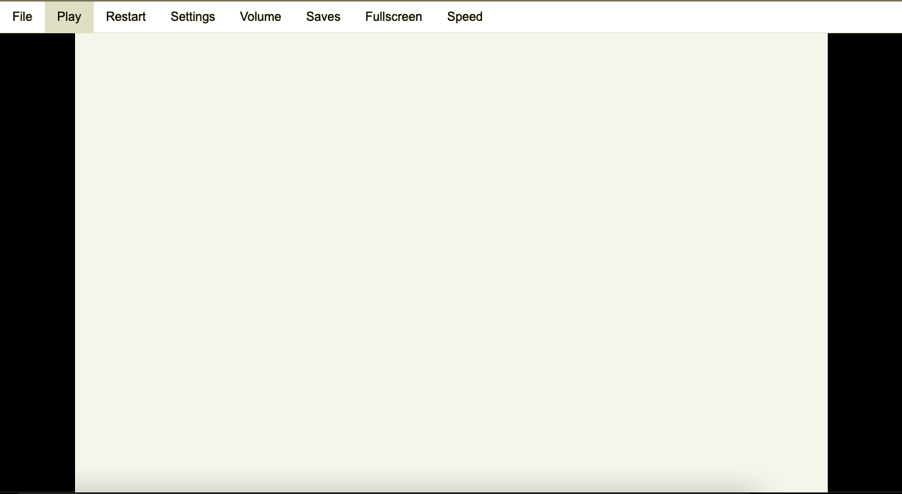
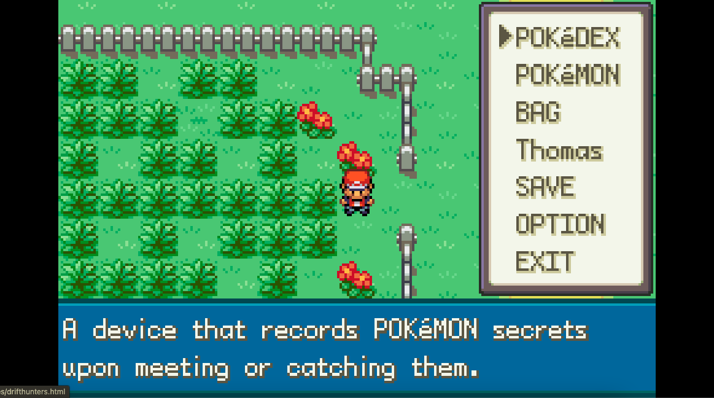
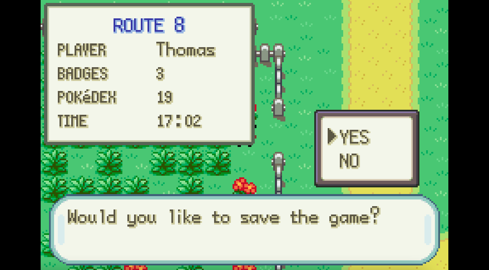
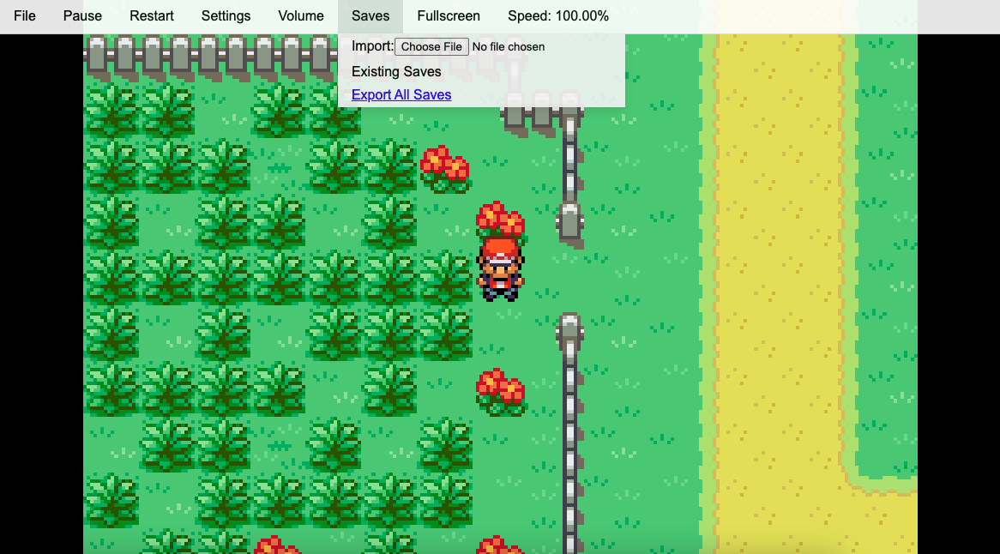
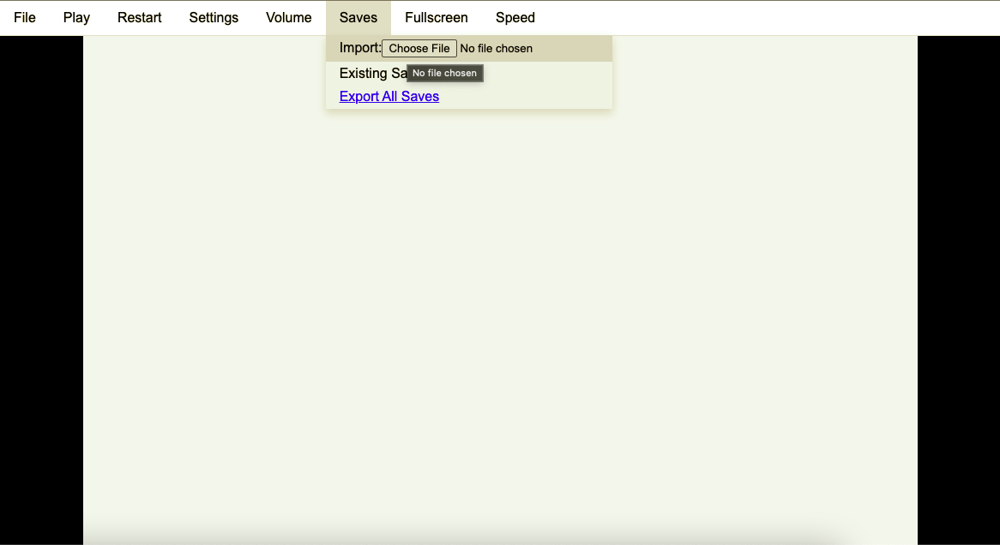
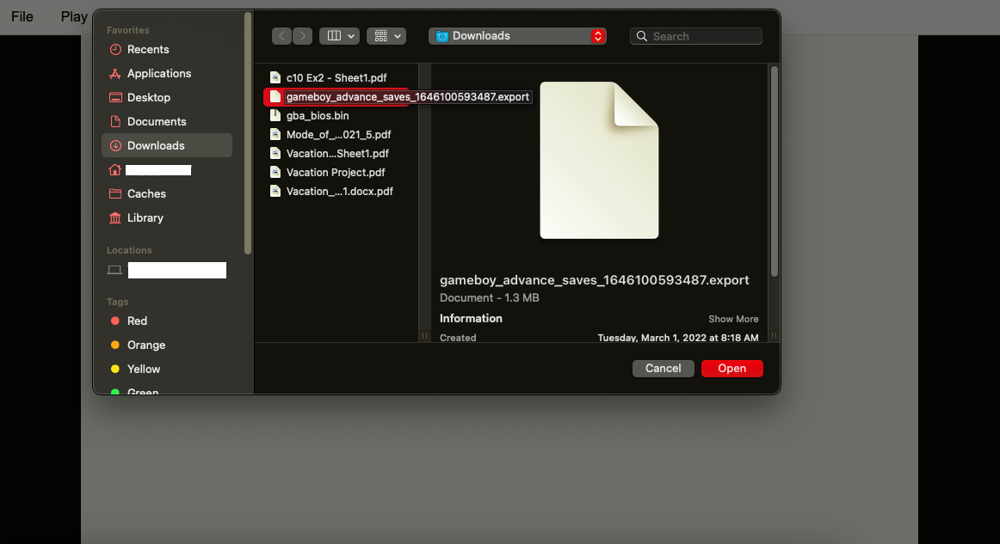

GBA Emulator Tutorial
One Year Anniversary!
*IF YOU PLAY ON IPAD YOU NEED TO DO THIS EVERY TIME YOU PLAY OR YOUR DATA WILL BE LOST*

First thing you want to do is obvously chose a game you want to play and once you get to this screen you are all set. Go to the next picture.
How to Save Progress

First go to the save menu on anygame you play on the gba emulator. Then click save.

Click yes.

To download the save data click "Export All Saves".

To load your data click "Choose File". Refresh the page before you load your data up.

Choose your save file and click open. Then your data will be loaded and you can click play.